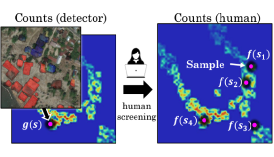
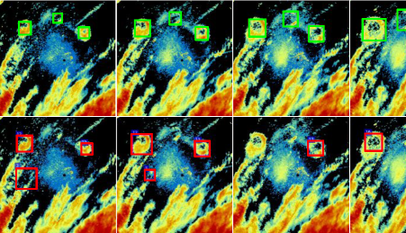
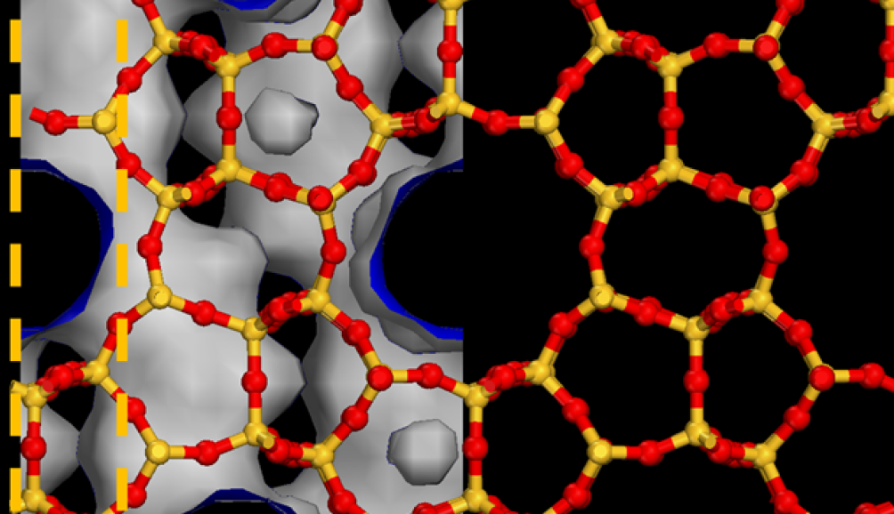
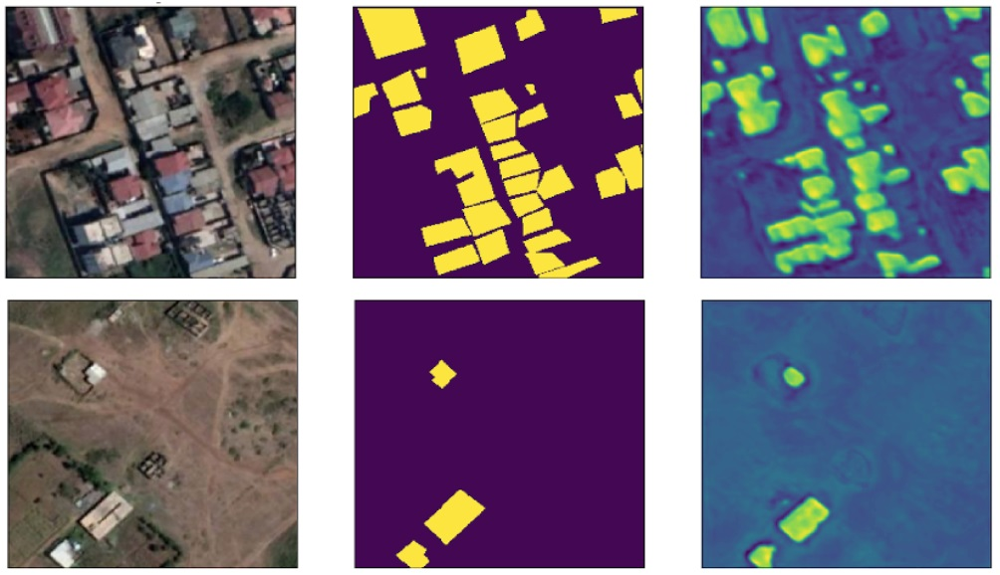
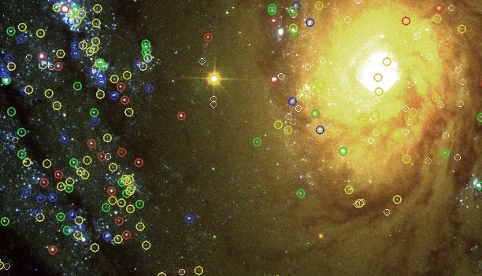
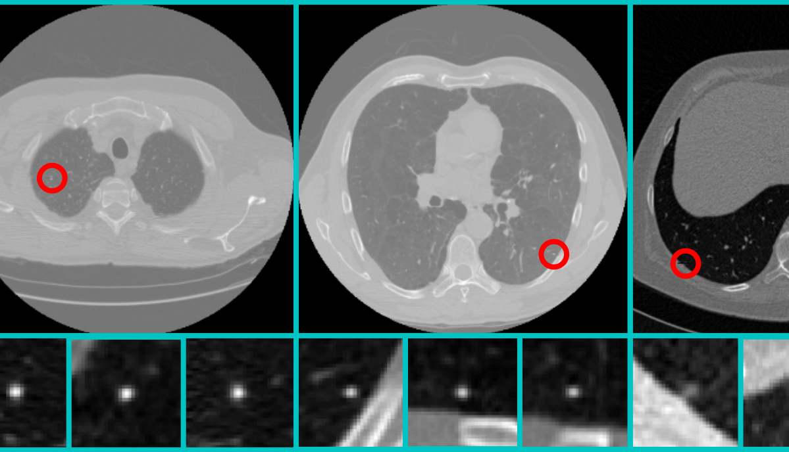
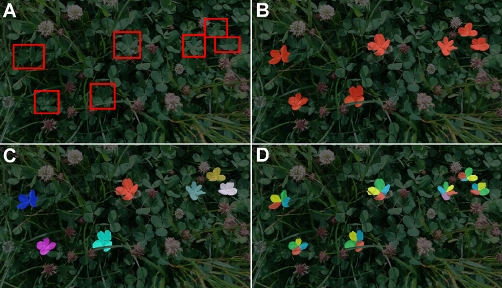

GUSTAVO PÉREZ
Machine Learning Researcher (Computer Vision & Statistical ML)
Expert in large-scale image analysis, uncertainty estimation, and AI for real-world decision systems
AI & HUMAN-IN-THE-LOOP
|
DISCount Counting in Large Image Collections with Detector-based Importance Sampling Github code repository · preprint |

|
Domain Adaptors for Hyperspectral Images We propose domain adaptors that map the input to be compatible with a network trained on large-scale color image datasets, to enable learning on small hyperspectral datasets Github code repository · paper |

AI FOR ECOLOGY
|
Insectivore Response to Environmental Change Roost detection from weather radar data to investigate the behavior of three aerial insectivore species as bellwethers for environmental change and ecosystem health: Purple Martin, Tree Swallow, and Mexican free-tailed Bat Github code repository · preprint |

AI FOR SUSTAINABILITY
|
ZeoNet Deep learning of nanoporous materials for energy-efficient chemical separations Github code repository · paper · press release |

|
Taking the Long View Enhancing learning on multi-temporal, high-resolution, and disparate remote sensing data for measuring the spread of buildings Github code repository · paper |

AI FOR ASTRONOMY
|
StarcNet Machine learning pipeline to identify star clusters in the multi-color images of nearby galaxies, from observations obtained with the Hubble Space Telescope Github code repository · paper |

AI FOR HEALTHCARE
|
Lung Cancer Diagnosis Automated detection of lung cancer in chest LDCT images. Our method was ranked 1st place at the ISBI 2018 Lung Nodule Malignancy Prediction challenge Github code repository · paper |

DATASETS
|
FLC dataset Four-Leaf Clover (FLC) dataset is a experimental framework for studying fine-grained object localization problems. The dataset is composed of more than 100,000 images, containing 2,151 carefully annotated clover instances of four, five or six leaves paper |
